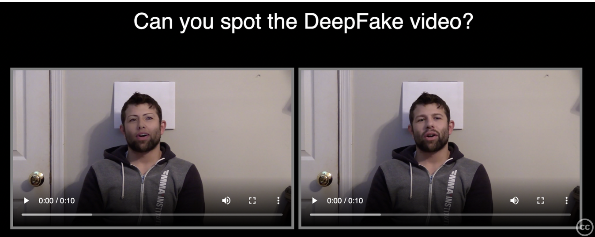
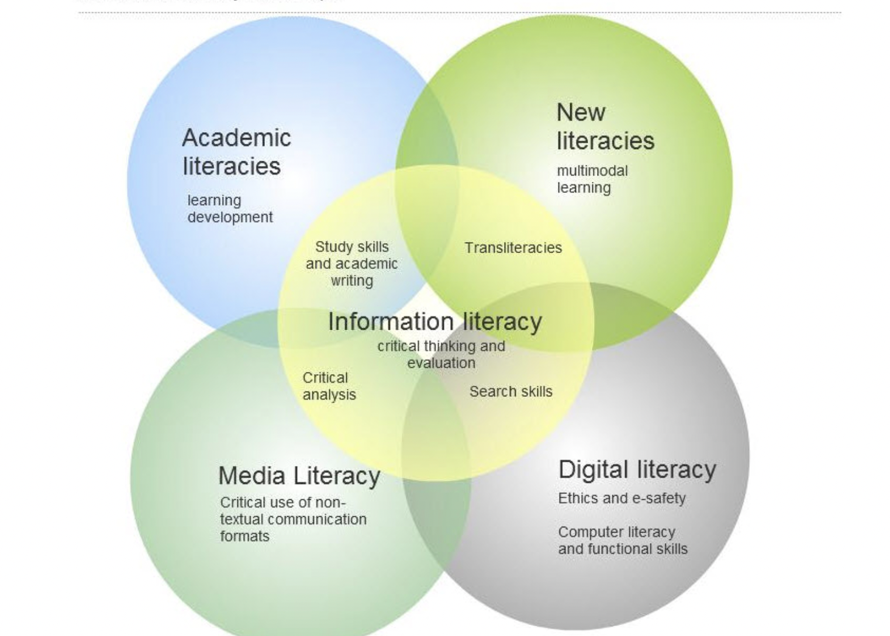
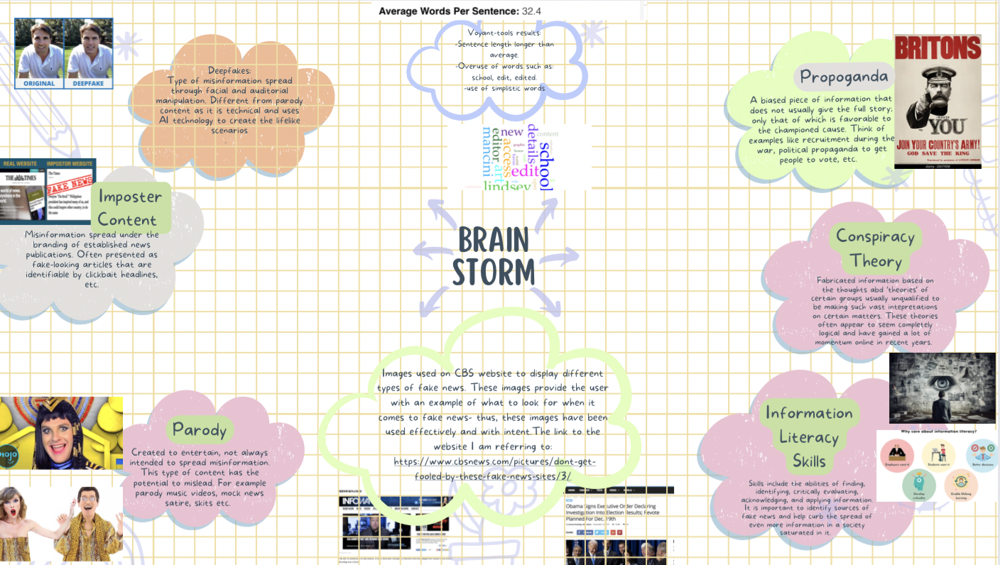
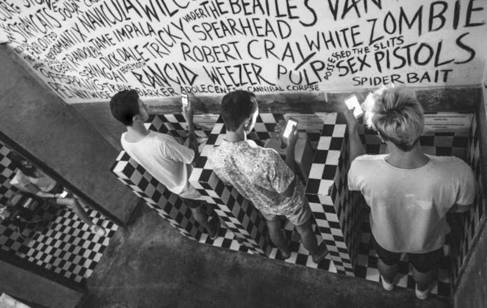
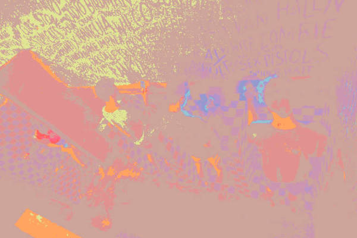
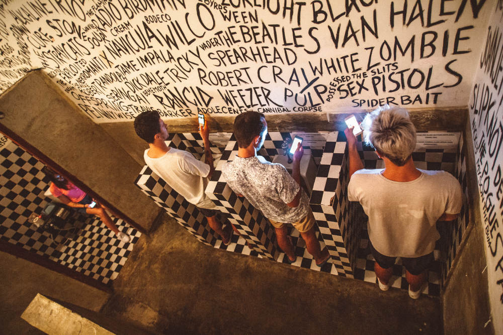

Week 7 Tasks
Independant Learning tasks
Task 1
Reflection:
- Preparation: I feel my project has underwent a sufficient amount of preparation in order to deliver my best end result. I have taken ample amount of time to research different aspects of my topic, which includes looking at my topic through many different perspectives- most of which I included in my bibliography for my proposal, however I will provide links to some of these here for further reference. Additionally, in terms of the creative/technical side, the research that I carried out in the lab activity for week 2 that focused on the structures of websites- albeit not relevant to my topic- that were of contrasting designs (The White House & Yale School of Art), further developed my knowledge of good vs bad web design. Thus, I was able to see different elements of effective and ineffective design principles in practice, which in turn equipped me with a guide to aide in the best and most effective design of my own website. On furthering preparation, I looked into the main characteristics of my target audience in order to pick up on what types of information would be the most inclusive and beneficial for them to engage fully with the topic- this research included general research on the web and also speaking to some of those of fit in with my intended audience.
Some of the research pieces I have looked at to help gather more knowledge and understanding of my topic of which were also included in my initial proposal:
- > "Delellis, Nicole S. & Rubin, Victoria L. 2019. ‘Educators’ perceptions of information literacy and skills required to spot ‘fake news’’, Proceedings of the Association for Information Science and Technology, Vol. 55 Issue. 1. "
- "D’Errico, Francesca, Lamanna, Isabella & Papapicco, Concetta. 2022. ‘Adolescent’s Vulnerability to Fake News and to Racial Hoaxes: A Qualitative Analysis on Italian Sample’, Multimodal Technol. Interac, Vol. 6. No. 3. "
- "Duffy, Andrew, Tandoc, Edson & Ling, Rich. 2019. ‘Too good to be true, too good not to share: the social utility of fake news’, Information, Communication & Society, Vol 23. No. 13 "
- "Markless, Sharon. 2009. ‘A New Conception of Information Literacy for the Digital Environment in Higher Education’, Nordic Journal of information Literacy in Higher Education, Vol 1 No. 1. "
- "Naik, M. Muniya. 2014. ‘Importance of Information Literacy’, International Journal of Digital Library Services, Vol. 4 Issue. 3."
- Incubation: I have thoroughly looked over all my resources that I have thus far chosen to focus on in aide of my project. An example of some of the concepts I have examined would be all the different types of fake news that I have set out to discuss, including: Imposter content, deepfakes, propaganda, parody/satire and conspiracy theories. I have looked into each of these concepts individually when focusing on the element of fake news which involved being able to define each one, looking at the different levels of extremity of each and focusing on their impact. I have also carried out similar research regarding the different aspects of what is means to be information literate in order to eventually bridge both of these topics together to show how one can be used in a fight against the other.
- Ideation: My project has come together in a detailed and engaging way. Through the preparation and incubation stages of my creation process, I feel as though my project has a clear direction.
- Evaluation: For the most part I believe my project is well thought out and thoroughly researched, while also carrying great educational benefits while remaining engaging. However, some changes I could potentially make include slimming down the scope of types of fake news to focus on- I currently have five different forms of fake news that I believe all carry relevance to my topic, but I may consider choosing one or two to place more focus on, potentially ones that my target audience would be more likely to come across or engage with. Additionally, although design features is something I struggle with, my website could benefit from expanding my use of design features in order to make it more aesthetically pleasing and engaging. I do think that the issue of fake news is one that is widely reported on and looked into, however I do not think that the importance of information literacy is tressed enough- especially in relation to the combat of misinformation. For this reason, I believe my project does hold a sense of purpose, as this is a topic I feel many people could benefit from learning more about.
- Implementation: As previously mentioned, while I feel my project has a strong foundation and all is progressing the way I want it to, the process of implementation is still ongoing and will continue to be ongoing till a point of completion.
Task 2
For the following task I have taken screengrabs from websites that are directly linked to my topic and/or mention my topic.
- From: "CBS News"

This image is part of an article warning web users not to be 'fooled' by fake news. The screengrab above demonstrates an example used by CBS of a form of imposter content- a fake news site disguising itself under the name of a reputable outlet. CBS have used this image with the purpose of demonstrating what a fake news site may look like. This is an effective way of displaying what a form of fake news looks like, as it shows a clear visual example, rather than simply relaying the character traits of an unreputable site. Thus, users are more likely to retain the knowledge of what to look for when faced with a source of potential misinformation as they have been provided with an example of it in practice. CBS uses a lot of these types of examples (screengrabs from the websites they are discussing). They also provide examples of other forms of fake news that also fall into my own research including examples of both satire sites and conspiracy theories- examples of these provided bellow.

Image displays an example of satire content

Image displays an example of conspiracy theory examples
- From: "MIT media lab"

This image is part of a research project about deepfakes. The image used here if for the purpose of allowing users to both see how lifelike deepfakes can be, and also to allow users to try and spot the difference. This sort of interactivity is an effective way of educating users in a way that will be easily retainable and identifiable to them.
- From: "Madison College"

This image is taken from a website that aims to act as a guide for information literacy to students. This image creates an effective visual aesthetic that displays all the different factors of information literacy. A diagram such as this is a visual image that goes along nicely with text in order to help consolidate information for the user. It allows different aspects of the topic to be broken up into smaller, easily understandable sections, thus the user is not being overwhelmed by an influx of information and is therefore more likely to digest and remember it. This is also a diverse learning method that is useful for many groups of people of different learning types.
My updated moodboard

The image is of a moodboard which displays my creative process
Task 3
Searching for my own images:
This image is of a stack of books.

This image displays a group og young people immersed in their phones while using bathroom.
This image is of a man shocked by whatever he sees on his computer.
This image displays a tablet next to a book.
This image is of a man holding a burning newspaper.
This image is of an information icon.
Fake news icons created by Smashicons - Flaticon
This image is of a fake news icon.
Lab Tasks
My master file:
Image of young people on phones in bathroom.
My derivative images:
Image 001- Greyscale image

Image 002- Indexed image

Image 003- RGB image

Image 004- Red indexed image
My Analysis:
Optimisation can be of benefit to me to create images with different colour pallets, resolutions etc- all of these aspects have the potential to make an image stand out more than the original. With my derivative images I experimented with aspects such as colour, resolution, size, etc, some of these worked out and some did. For example, the indexed images (images 2 and 4) allowed me to experiment with different colour schemes, both of which lowered the quality of my original image. These images have a sort of melting point effect as the colours all blend together too much; they do not stand out enough to clearly define the image. Of course, I also experimented with resolution (of which was purposefully low) and size which also factors into the poor appearance of both of these images. Regarding the subject fidelity criteria, I would give both of the images mentioned an 'Unusable' rating due to the extremely poor quality of both obscuring the subject matter of the image to a point where it would only confuse a user and not aid them; they would spend too much time trying to decipher what the image is supposed to be rather than paying attention to what it would otherwise signify and complement if it was of better quality. On the other hand, both images 1 and 3 display a much higher quality. Image 1 incorporates the use of greyscale, whereas image 3 incorporates RGB. Both of these derivatives, display clear images that a user would easily recognise. However, in comparing the two images, I think the greyscale image is decisively less intriguing than the RGB image, which is admittedly the most similar image to the master file. Thus, in rating each image according to the subjective fidelity criteria, I would give image 1 a rating of 'Fine', because as previously stated the use of colour (or lack thereof) lets it down. Thus, I would give image 3 the highest rating of 'Excellent' due to the high quality and effective colour scheme incorporated in the image.